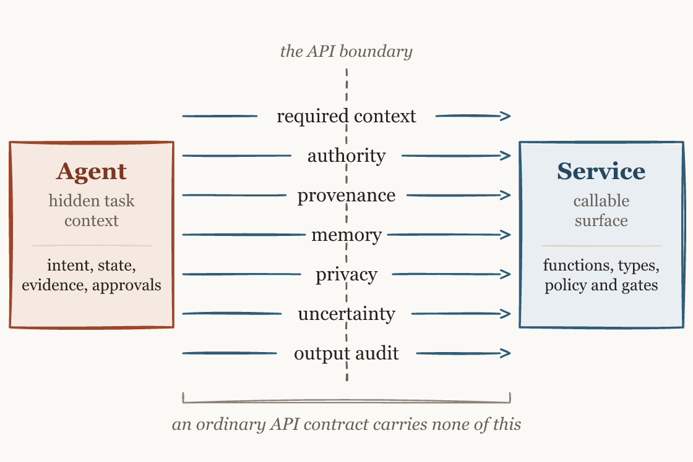

Focus
The agent supplies the task and current focus.
Open sourceFramework + Python reference library
CBO turns what your service knows about a task into a focused, reusable context contract for any connected agent.

An agent can call a valid operation and still miss a policy fact, use stale state, or cross an authority boundary. CBO makes the service responsible for preparing the focused view before execution.
The agent supplies the task and current focus.
The service computes relevant capabilities, state, rules, and obligations.
The interaction returns the evidence required by the same contract.
Your API still defines the operations. MCP is the recommended agent-facing connection for tools, resources, and prompts. CBO gives the service one versioned artifact that decides which context and obligations belong with this call.
